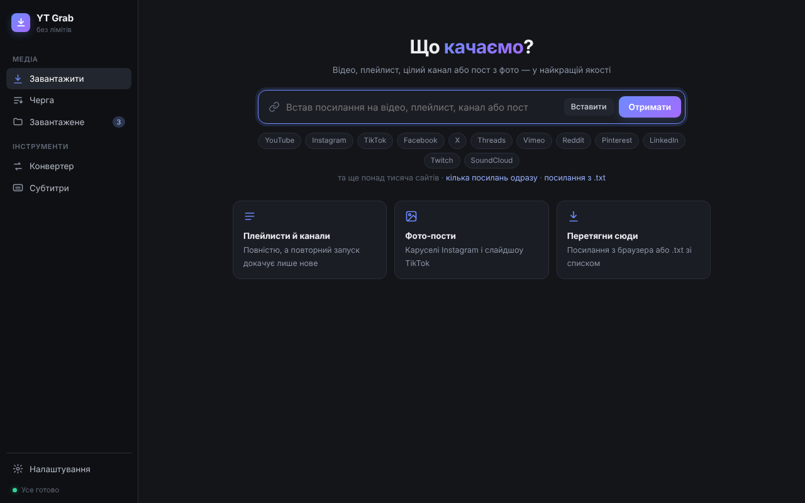

Качай відео звідусіль. Без лімітів і реклами.
YouTube, Instagram, TikTok, Facebook, X, Vimeo і ще понад тисяча сайтів. До 8K і HDR, одразу в MP4, плейлисти й цілі канали. А ще субтитри й підсумок розмови прямо на твоєму Маці.
curl -fsSL https://raw.githubusercontent.com/slavashootit/yt-grab/main/install.sh | bash
Спробуй прямо тут: тисни «Вставити» або клікни платформу, потім «Отримати» й обери якість
Що качаємо?
Відео, плейлист, цілий канал або пост з фото у найкращій якості
Черга
Завантаження, конвертація і субтитри
Завантажене
~/Downloads/YouTube · кожна платформа й канал у своїй папці
Конвертер
Будь-яке відео в MP4, який відкривається всюди
Субтитри
Video → SRT і підсумок розмови, локально й безкоштовно
Працює з
Що вміє
Один застосунок замість сайтів-качалок з рекламою, лімітами й водяними знаками.
Найкраща якість
Аж до 8K і HDR. Будь-яка якість на вибір або лише звук у MP3 320 kbps.
Одразу в MP4
H.264, а для 4K/8K і HDR HEVC. Якщо відео вже в H.264/HEVC, просто перепаковує без втрат.
Плейлисти й канали
Цілком. Повторний запуск докачує лише нові відео.
Фото-пости
Каруселі Instagram і слайдшоу TikTok разом з музикою.
Кілька посилань одразу
Встав списком, перетягни з браузера або скинь .txt.
Конвертер у MP4
Перетягни файли чи цілу папку з Finder. H.264 для будь-яких програм, HEVC для 4K і HDR.
Субтитри з відео
Video → SRT локально через NVIDIA Parakeet або Whisper, чи через Groq. Десятки мов.
Підсумок розмови
Головні думки, ключові моменти з таймкодами й домовленості в .md. Локально, без реєстрацій.
Як це виглядає
Чистий інтерфейс українською. Нічого зайвого.

Субтитри й підсумок за хвилину
Кинь інтерв'ю чи запис дзвінка, і поруч з'являться готові файли. Premiere, DaVinci, CapCut і плеєри підхоплюють субтитри самі.
1 00:00:00,000 --> 00:00:04,400 Привіт, сьогодні обговорюємо зйомку рекламного ролика. 2 00:00:04,800 --> 00:00:09,200 Знімаємо в суботу о десятій ранку в студії на Подолі. 3 00:00:09,600 --> 00:00:14,000 Бюджет на оренду світла: двадцять тисяч гривень.
## Коротко Команда планує зйомку рекламного ролика в суботу. ## Ключові моменти - [0:04] дата й місце зйомки - [0:09] бюджет на світло ## Домовленості - Слава: сценарій до четверга - Олена: кастинг акторів
До 2 рядків по 42 символи, до 6 секунд на титр, нові титри на паузах і в кінці речень. Підсумок робить модель Qwen3-4B прямо на Маці з чипом Apple, без інтернету й ключів, або Groq.
Встановлення
Найпростіше: команда в Терміналі вгорі сторінки. Застосунок з'явиться в «Програмах» і відкриється сам. Або вручну:
Скачай і перетягни
Відкрий YT-Grab.dmg і перетягни YT Grab у «Програми».
Дозволь перший запуск
YT Grab безкоштовний і не підписаний платним сертифікатом Apple, тож macOS попередить. Натисни «Готово», відкрий Системні параметри → Конфіденційність і безпека й натисни «Усе одно відкрити». Лише один раз.
Зачекай хвилинку
При першому запуску YT Grab сам докачає Python, yt-dlp, ffmpeg і deno (близько 300 МБ, один раз). Homebrew чи інші програми ставити не треба.
Встав посилання
Файли лягають у ~/Downloads/YouTube/, кожна платформа й канал у свою папку. Теку можна змінити в Налаштуваннях.
Питання
Коротко про те, що зазвичай питають.
Це справді безкоштовно?
Так. Без підписок, лімітів, реклами й водяних знаків. Код відкритий під ліцензією MIT.
Щось перестало качати. Що робити?
Налаштування → «Оновити компоненти». Сайти часто змінюються, і свіжий yt-dlp лікує більшість проблем. Журнал роботи лежить у ~/.ytgrab/app.log.
Instagram, Facebook чи X просять увійти
У Налаштуваннях обери браузер, у якому ти залогінений (Cookies з браузера). Так само качаються відео 18+ і приватні плейлисти.
Які Маки підтримуються?
macOS 12 і новіші, Apple Silicon і Intel. Локальний підсумок розмови працює на Маках з чипом Apple, на Intel його робить Groq.
Скільки місця займає?
Компоненти близько 300 МБ. Моделі для субтитрів (~2 ГБ) і підсумку (~2,3 ГБ) ставляться окремо й лише якщо вони тобі потрібні.
Як повністю видалити?
Прибери YT Grab з «Програм» і теку ~/.ytgrab з налаштуваннями, компонентами й моделями.
А це законно?
YT Grab для особистого користування: архіву власного контенту, референсів, роботи з матеріалами, на які в тебе є права. Поважай авторське право й правила платформ.